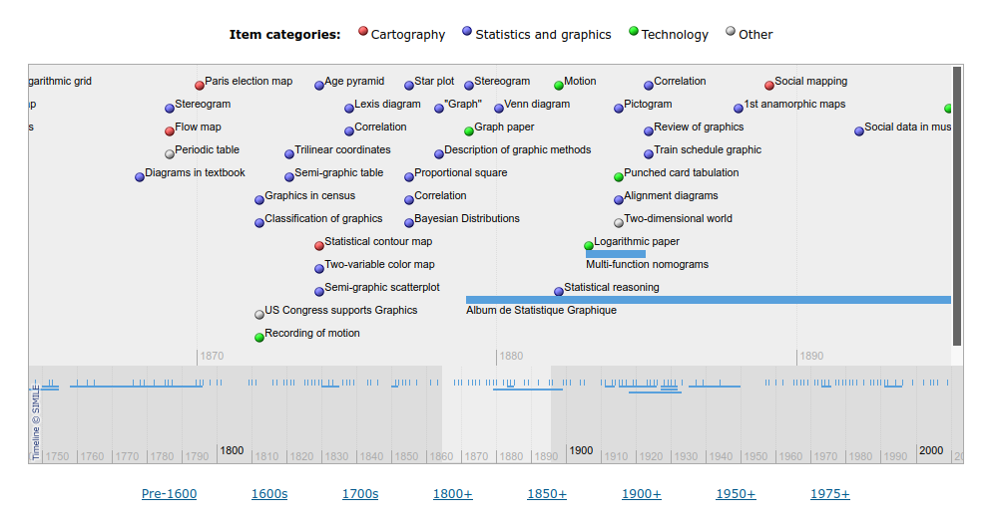
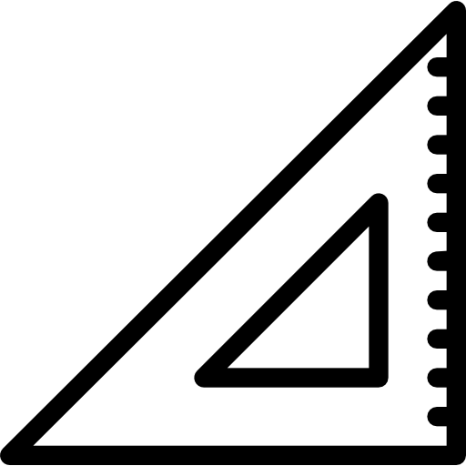
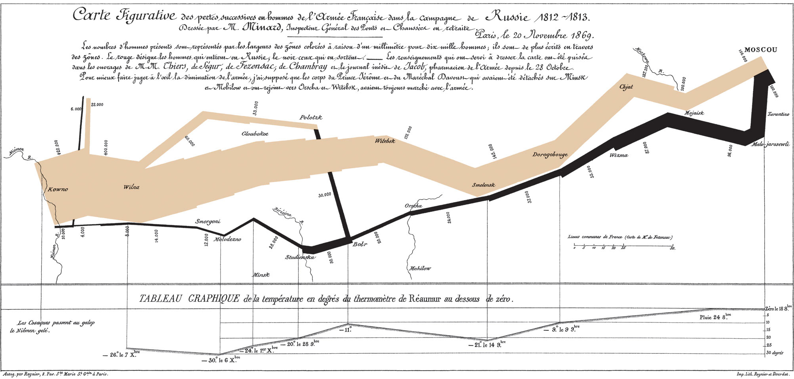
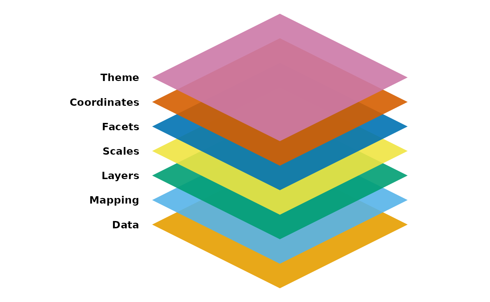
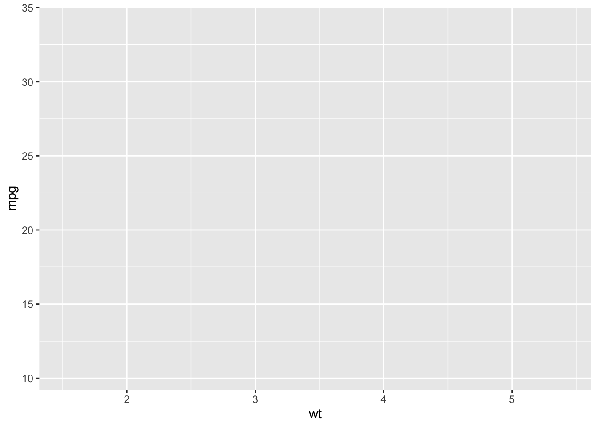
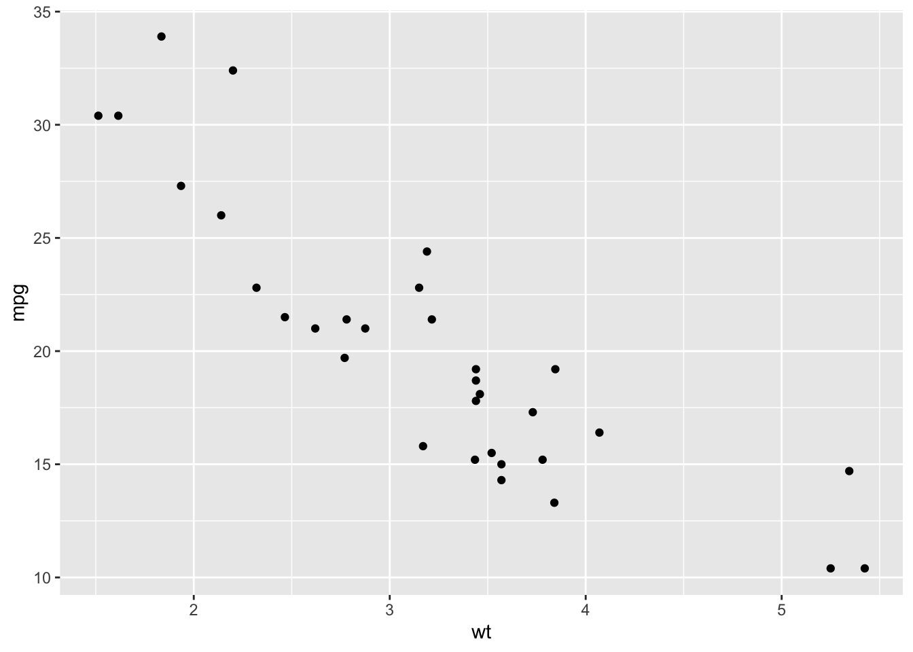
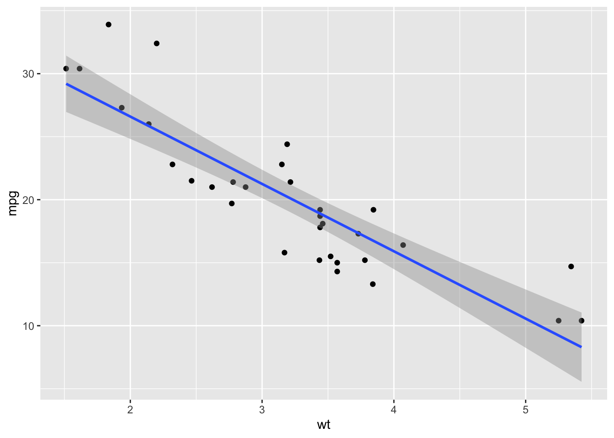
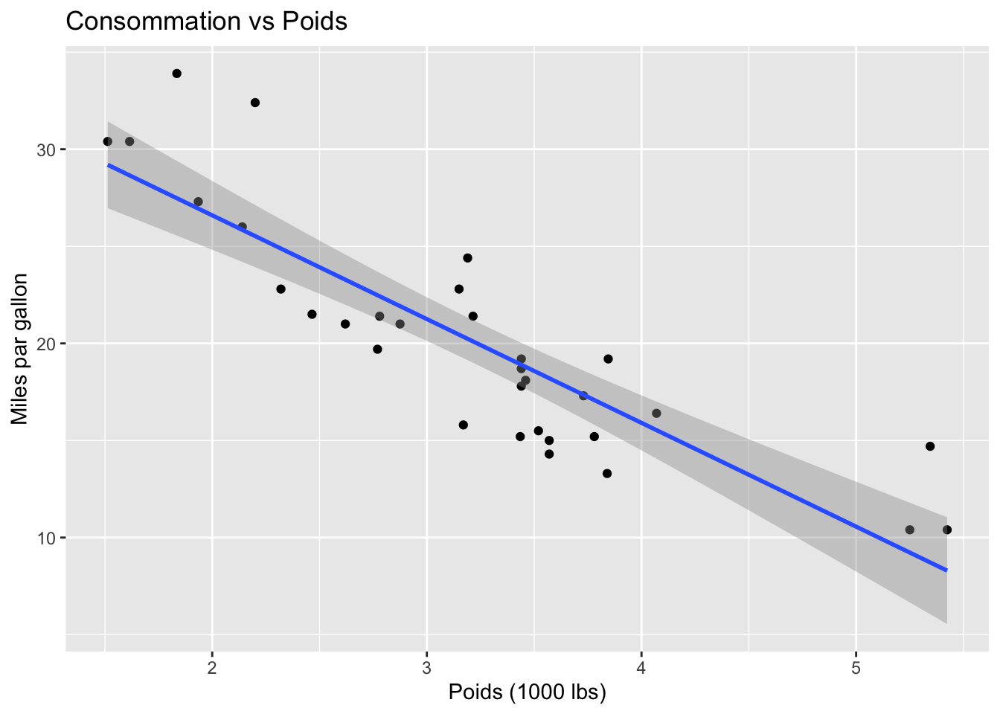

7 Outils de visualisation graphique : de l’exploration à la communication scientifique
Alexandre Bouillon (Université Laval)
Hubert Cadieux (Université Laval)

Ce chapitre a pour objectif de souligner l’importance de la visualisation des données tout au long du processus de recherche, depuis l’obtention des données pour l’analyse exploratoire des données jusqu’à la création de graphiques pour la publication. La visualisation permet de valider les données, de déceler des anomalies, de découvrir des motifs et de formuler des hypothèses. En créant des graphiques simples, les chercheurs peuvent rapidement obtenir une compréhension initiale de la structure des données et des relations potentielles entre les variables. Par la suite, il s’agit de trouver la meilleure manière de rendre l’information digeste pour les experts ou pour le grand public.
Ainsi, la visualisation graphique des données est centrale, non seulement pour explorer et comprendre les données tout au long du processus de recherche, mais aussi pour vulgariser les résultats d’une recherche empirique. Il y a plusieurs façons de représenter les mêmes données. Les choix des chercheurs sont donc primordiaux même lorsqu’ils sont équipés des meilleurs outils comme ceux présentés dans ce chapitre. La visualisation graphique constitue un art appliqué dont la maîtrise renforce considérablement la communication scientifique et peut en accroître la portée. Au fil du temps, cet art s’est transformé grâce au développement d’outils toujours plus performants et à l’accès croissant à des données variées et volumineuses.
7.1 Point d’observation : historique de la visualisation graphique
Pour comprendre l’évolution de la visualisation graphique, il est utile de se tourner vers des travaux qui en tracent le développement historique. L’un des projets les plus complets à ce sujet est le Milestones Project de Michael Friendly et Daniel J. Denis. Cette initiative vise à compiler de manière exhaustive les jalons significatifs de la visualisation de données, de ses débuts à ses avancées contemporaines, et à rendre cette histoire accessible sous une forme interactive. Accessible en ligne, le Milestones Project propose une base de données dynamique qui recense les grands événements, les outils, les auteurs, et les approches ayant façonné le champ de la visualisation graphique (Friendly et al., 2016).1
L’histoire de la visualisation graphique est marquée par une évolution continue, où chaque époque a apporté de nouvelles façons de représenter et de comprendre les données. Depuis les premières tentatives rudimentaires jusqu’à l’ère numérique actuelle, les avancées reflètent autant le développement des outils que l’évolution des besoins sociaux et scientifiques.
Les origines de la visualisation graphique remontent à des efforts visant à vulgariser des données à l’aide d’images. Dès le XVIIe siècle, les cartes thématiques apparaissent, représentant visuellement des phénomènes physiques et sociaux. Ces premières tentatives permettent de traduire des concepts abstraits (comme les populations ou les routes commerciales) en formes visuelles. Le XVIIIe siècle voit l’émergence des premiers graphiques statistiques avec l’œuvre de William Playfair, qui introduit des outils tels que les diagrammes en barres et les graphiques en lignes. Ces innovations ouvrent la voie à une approche plus intuitive de la présentation des données, permettant aux lecteurs de mieux comprendre les relations quantitatives (Friendly & Wainer, 2021).
Au XIXe siècle, la visualisation connaît une véritable accélération, qualifiée de premier âge d’or (Friendly, 2008). C’est une période caractérisée par une floraison d’innovations en matière de visualisation des données, principalement en réponse à une collecte systématique et extensive de données par les gouvernements et les scientifiques. Charles Joseph Minard se distingue à cette époque par ses cartes de flux, dont la célèbre représentation de la campagne russe de Napoléon en 1812, qui illustre avec clarté les pertes humaines au fil de la progression de l’armée. Cette carte narrative complexe superpose des informations géographiques, temporelles et statistiques, démontrant le potentiel des graphiques pour raconter des histoires puissantes et nuancées. L’essor de la statistique comme discipline académique contribue également à l’épanouissement de nouvelles formes de visualisation. Dans la deuxième moitié du XIXe siècle, Francis Galton, avec ses diagrammes de corrélation, amorce l’exploration de la relation entre variables, ouvrant la voie à des outils analytiques tels que le nuage de points. L’introduction de ces représentations graphiques met en évidence le rôle fondamental des visualisations dans la compréhension de phénomènes complexes (Friendly & Wainer, 2021).

L’entrée dans le XXe siècle et l’ère informatique ouvre une nouvelle phase pour la visualisation. La capacité des ordinateurs à traiter rapidement de grandes quantités de données transforme en profondeur les pratiques. Dès les années 1960, les premières visualisations générées par ordinateur permettent d’envisager des représentations plus complexes et dynamiques. Dans les décennies suivantes, des logiciels comme SAS et SPSS ont rendu ces outils accessibles à un public plus large.
Un acteur majeur de cette période est le politologue et statisticien Edward Tufte, dont les ouvrages ont profondément marqué la réflexion sur la visualisation des données (Friendly & Wainer, 2021). Dans des livres devenus des références, tels que The Visual Display of Quantitative Information (1983, rééd. 2001), Envisioning Information (1990) et Visual Explanations (1997), Tufte développe une véritable philosophie de la communication graphique. Il insiste sur la nécessité de maximiser le rapport data-ink, c’est-à-dire de réduire les éléments décoratifs superflus afin de concentrer l’attention du lecteur sur l’information essentielle.
Aujourd’hui, la visualisation graphique continue d’évoluer à un rythme effréné, s’appuyant sur des technologies toujours plus sophistiquées. Avec l’essor des données massives et de l’intelligence artificielle, les outils de visualisation sont devenus essentiels pour interpréter rapidement des volumes importants d’informations. Les visualisations sont désormais interactives, dynamiques, et conçues pour s’adapter à différents publics, allant des décideurs aux scientifiques.
7.1.1 Les bonnes pratiques de visualisation graphique
Ainsi, dans la lignée de Tufte, plusieurs chercheurs se sont efforcés de trouver les meilleures façons de transmettre l’information par des graphiques. Arel-Bundock (2021) résume ces bonnes pratiques en quatre principes fondamentaux.
Le premier est celui de l’intégrité. Un graphique doit représenter fidèlement les données : les choix de mise en forme, comme l’échelle des axes ou le type de graphique retenu, ne doivent pas déformer la réalité ni induire le lecteur en erreur. Un axe des ordonnées tronqué, par exemple, peut donner l’impression d’une variation bien plus marquée qu’elle ne l’est réellement.
Le deuxième principe est la simplicité. Dans la continuité directe de Tufte, il s’agit d’éliminer tout élément superflu qui n’ajoute pas d’information. Les grilles trop chargées, les couleurs inutiles ou les effets tridimensionnels décoratifs détournent l’attention du message principal. Un bon graphique va à l’essentiel.
Le troisième principe est celui du contexte. Un graphique doit être autosuffisant : le lecteur doit pouvoir le comprendre sans avoir à se référer au texte qui l’entoure. Cela implique un titre clair, des axes correctement identifiés, des variables nommées et une légende lorsque nécessaire.
Enfin, le quatrième principe est l’esthétisme. Arel-Bundock rappelle que les trois premiers principes ne sont pas des règles absolues. Des choix visuels assumés peuvent contribuer à capter l’attention et à renforcer le message, à condition de ne pas tromper le lecteur.
Écrire du ggplot2 avec un assistant conversationnel fonctionne remarquablement bien. La grammaire des graphiques est régulière et abondamment documentée, si bien qu’une demande formulée en français, un nuage de points coloré par groupe avec une courbe de tendance, produit le plus souvent du code utilisable du premier coup. Combinée à Quarto, qui exécute ce code et insère la figure dans le document, cette façon de faire donne de premières versions en quelques minutes. Rien n’empêche ensuite de soumettre le code ou l’image obtenue à un assistant pour explorer des variantes de mise en forme, des palettes ou des thèmes, jusqu’à trouver ce qui sert le mieux le propos.
7.2 Arpentage et choix éditorial : les systèmes graphiques dans R
Le langage R s’est imposé comme un outil de référence pour la visualisation de données, particulièrement dans les domaines de la recherche et de l’analyse statistique. Plusieurs facteurs expliquent cette popularité : R est un logiciel libre et gratuit, bénéficiant d’une communauté d’utilisateurs très active qui développe et maintient des milliers de packages spécialisés. Cette nature libre assure une transparence complète du code, facilitant la reproductibilité des analyses, un critère essentiel dans la recherche scientifique.
La flexibilité de R constitue également un atout majeur. Contrairement aux logiciels propriétaires comme Excel ou Tableau, R permet une personnalisation poussée des visualisations et s’intègre facilement dans des flux de travail automatisés. Cette adaptabilité en fait un choix privilégié pour les analystes qui souhaitent créer des visualisations sur mesure plutôt que de se limiter à des modèles prédéfinis.
Au sein de l’écosystème R, plusieurs systèmes graphiques coexistent, chacun avec ses spécificités. Le Tableau 7.1 présente une comparaison de ces différentes approches.
Dans R de base (base R), les graphiques sont créés de manière procédurale, en construisant les éléments un par un. Le package lattice offre une approche plus structurée, particulièrement efficace pour les graphiques conditionnels.
Cependant, c’est ggplot2 qui révolutionne véritablement la création de graphiques en R en implémentant une grammaire cohérente de la visualisation. Dans ce livre, notre choix éditorial se porte sur ggplot2, développé par Hadley Wickham, qui repose sur la « Grammaire des graphiques » (Grammar of Graphics) théorisée par Leland Wilkinson (Wilkinson, 2005). Plutôt que d’offrir un catalogue de types de graphiques, cette approche traite un graphique comme un assemblage de composants indépendants que l’on combine. Le manuel d’instruction en détaille les pièces.
Cette grammaire présente plusieurs avantages pédagogiques et pratiques. Elle offre un cadre conceptuel unifié qui dispense d’apprendre par cœur la syntaxe de chaque type de graphique. Elle facilite l’apprentissage pour les novices, tout en permettant aux utilisateurs expérimentés de concevoir des visualisations inhabituelles en combinant les composants autrement.
| Critères | Base R | lattice | ggplot2 |
|---|---|---|---|
| Accessibilité | Gratuit | Gratuit | Gratuit |
| Existence d'une communauté d'utilisateurs | Très grande | Grande | Très grande |
| Popularité en sciences sociales | Très populaire | Populaire | Très populaire |
| Compatibilité avec d'autres outils | Facilement compatible | Facilement compatible | Facilement compatible |
| Transparence et réplicabilité | Excellente | Excellente | Excellente |
| Adaptabilité et flexibilité | Flexible | Plutôt flexible | Très flexible |
7.3 Manuel d’instruction : la grammaire des graphiques et ggplot2
La force de ggplot2 réside dans sa mise en œuvre de la Grammar of Graphics, qui décompose tout graphique en éléments fondamentaux. Hadley Wickham (Wickham, 2010) développe une approche dite layered grammar of graphics, où un graphique est construit par superposition de couches (layers). Chacune de ces couches combine des données, une transformation statistique éventuelle, un objet géométrique (geom), et des mappings esthétiques définis par l’utilisateur. Cette architecture reflète la vision de Wilkinson, Anand et Grossman (Wilkinson et al., 2005), qui ont cherché à formaliser les principes universels de la visualisation.
Concrètement, ggplot2 permet de spécifier de manière explicite et déclarative les différents composants d’un graphique. La fonction aes() définit les mappings esthétiques, c’est-à-dire le lien entre les variables du jeu de données et leurs attributs visuels (position sur les axes, couleur, taille, forme). Les objets géométriques (geoms) déterminent la nature de la représentation : geom_point() trace des points, geom_line() des lignes, geom_bar() des barres, etc. Chaque geom peut être associé à une transformation statistique (stat), par exemple stat_smooth() pour ajouter un lissage ou stat_bin() pour construire un histogramme.
À ces éléments s’ajoutent les échelles (par exemple, scale_x_log10(), scale_color_manual()), qui traduisent les valeurs des données en valeurs perceptibles, et les systèmes de coordonnées (coord_cartesian(), coord_polar()), qui définissent la projection de l’espace graphique. Les facettes (facet_wrap(), facet_grid()) permettent de subdiviser le graphique en multiples panneaux pour comparer des sous-groupes. Enfin, la fonction theme() ajuste l’apparence générale du graphique (grilles, polices, arrière-plans), tandis que labs() ajoute des titres et des étiquettes.

Cette approche modulaire et incrémentale distingue ggplot2 des systèmes graphiques traditionnels. Comme le souligne Wickham (Wickham, 2009, 1), l’utilisateur peut commencer par un nuage de points simple, puis enrichir le graphique par ajouts successifs : annotations, résumés statistiques, facettes ou encore ajustements esthétiques. Cette logique rend possible la création de graphiques élégants et reproductibles, mais surtout adaptés aux besoins analytiques précis du chercheur. Elle transforme la visualisation en un véritable langage, où chaque composant est indépendant et combinable, facilitant ainsi l’exploration et la communication des données.
En voici un exemple d’ajout progressif de couches (layers) avec le jeu de données mtcars, qui accompagne l’installation de R :
library(ggplot2)
# Couche de base avec les données
p1 <- ggplot(mtcars, aes(x = wt, y = mpg))
print(p1)
# Ajout des points
p2 <- p1 + geom_point()
print(p2)
# Ajout d'une ligne de tendance
p3 <- p2 + geom_smooth(method = "lm")
print(p3)`geom_smooth()` using formula = 'y ~ x'
# Ajout de labels
p4 <- p3 + labs(title = "Consommation vs Poids",
x = "Poids (1000 lbs)",
y = "Miles par gallon")
print(p4)`geom_smooth()` using formula = 'y ~ x'
7.3.1 Aller plus loin : la visualisation interactive des données
Si jusqu’à présent la visualisation des données a été présentée comme une étape servant à exposer les résultats de recherches, elle peut également être perçue comme un outil précieux pour l’exploration de données multidimensionnelles. En effet, les visualisations interactives offrent la possibilité d’explorer et même d’analyser les données directement à partir des graphiques ou tableaux. Cela permet non seulement de mieux appréhender la structure des données, mais aussi de les inspecter plus efficacement, tout en suscitant des questions de recherche qui auraient pu être négligées autrement (Sievert, 2020).
7.3.1.1 Graphiques interactifs
Les graphiques interactifs permettent une exploration dynamique des données, offrant aux utilisateurs la possibilité de zoomer, survoler des points pour obtenir plus d’informations, et d’examiner les relations entre variables de manière plus intuitive. En R, la fonction ggplotly() et le package plotly permettent de créer facilement des graphiques interactifs à partir de visualisations statiques.2
7.3.1.2 Exemple avec ggplotly
ggplotly permet de transformer un graphique ggplot2 en une visualisation interactive.
library(ggplot2)
library(plotly)# Ce package, webshot2, peut être nécessaire pour visualiser
# des graphiques interactifs
#install.packages("webshot2")
# Création d'un graphique ggplot
p <- ggplot(mtcars, aes(x = hp, y = mpg)) +
geom_point() +
labs(title = "Effet de hp sur mpg")
# Transformation en graphique interactif
ggplotly(p)Et voici un exemple avec plotly, un package qui n’emprunte pas la grammaire de ggplot2 :
# Création d'un graphique interactif avec plotly
fig <- plot_ly(
data = mtcars,
x = ~hp, y = ~mpg,
type = 'scatter',
mode = 'markers'
) %>%
layout(title = "Effet de hp sur mpg")
figNous recommandons de consulter la documentation officielle du package plotly (et de la fonction ggplotly()) pour découvrir toutes les options et fonctionnalités disponibles, afin d’enrichir les graphiques interactifs.
7.3.1.3 Applications interactives avec Shiny
shiny est un package R puissant qui permet de créer des applications web interactives sans avoir besoin de compétences avancées en développement web. Il permet de relier facilement des données, des visualisations et des contrôles interactifs, rendant les analyses accessibles à un large public via une interface web.
7.3.1.4 Exemple de base avec shiny
Voici un exemple simple d’application shiny où l’utilisateur peut sélectionner une variable pour tracer un graphique interactif. Si le package shiny est installé, il suffit de copier ce code dans un script R sous Positron, puis de lancer l’application web directement.
library(shiny)
library(ggplot2)
# Interface utilisateur
ui <- fluidPage(
titlePanel("Exemple d'application Shiny"),
sidebarLayout(
sidebarPanel(
selectInput("var", "Choisir une variable:",
choices = names(mtcars))
),
mainPanel(
plotOutput("plot")
)
)
)
# Serveur
server <- function(input, output) {
output$plot <- renderPlot({
ggplot(mtcars, aes(x = .data[[input$var]], y = mpg)) +
geom_point() +
labs(title = paste("Effet de", input$var, "sur mpg"))
})
}
# Lancement de l'application
shinyApp(ui = ui, server = server)Cette application simple permet à l’utilisateur de choisir une variable dans le jeu de données mtcars pour voir son impact sur la consommation de carburant (mpg), visualisée à travers un graphique interactif.
Pour explorer davantage les possibilités de shiny, nous recommandons de consulter la documentation officielle du package shiny ainsi que la galerie d’exemples que Posit met en ligne, qui présente des applications plus complexes et des fonctionnalités avancées.
7.4 En terminant
Ce chapitre a suivi la visualisation sur tout le parcours d’une recherche, de l’exploration des données jusqu’au graphique publié. ggplot2 en constitue le cœur, parce que sa grammaire permet de construire un graphique par assemblage plutôt que de le choisir dans un catalogue. plotly et shiny prolongent cette logique lorsque le lecteur doit pouvoir manipuler lui-même ce qu’on lui montre.
L’outil ne décide toutefois de rien. Les mêmes données admettent plusieurs représentations honnêtes, et le choix entre elles revient au chercheur. C’est là que les quatre principes présentés plus haut gardent leur valeur, l’intégrité d’abord, puis la simplicité, le contexte et l’esthétisme. Le meilleur graphique est celui dont le lecteur saisit le message sans avoir à le déchiffrer.
Pour plus d’informations sur le Milestones Project, consultez le site web du projet : https://www.datavis.ca/milestones/index.php?page=introduction.↩︎
Un graphique interactif ne peut pas s’afficher dans un document imprimé. Les exemples qui suivent en donnent donc uniquement le code, à exécuter dans un environnement de développement pour en voir le résultat.↩︎